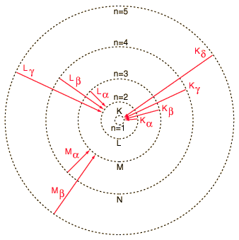

X-ray Transitions
|

|
Electron transitions to lower atomic levels in heavy atoms have quantum energies which place them in the x-ray region of the electromagnetic spectrum. The x-ray emissions associated with these transitions are called characteristic x-rays.
The labels on the illustration show the historical labeling of characteristic x-ray transitions.
|
The frequencies of the characteristic x-rays can be predicted from the Bohr model . Moseley measured the frequencies of the characteristic x-rays from a large fraction of the elements of the periodic table and produces a plot of them which is now called a "Moseley plot".
|